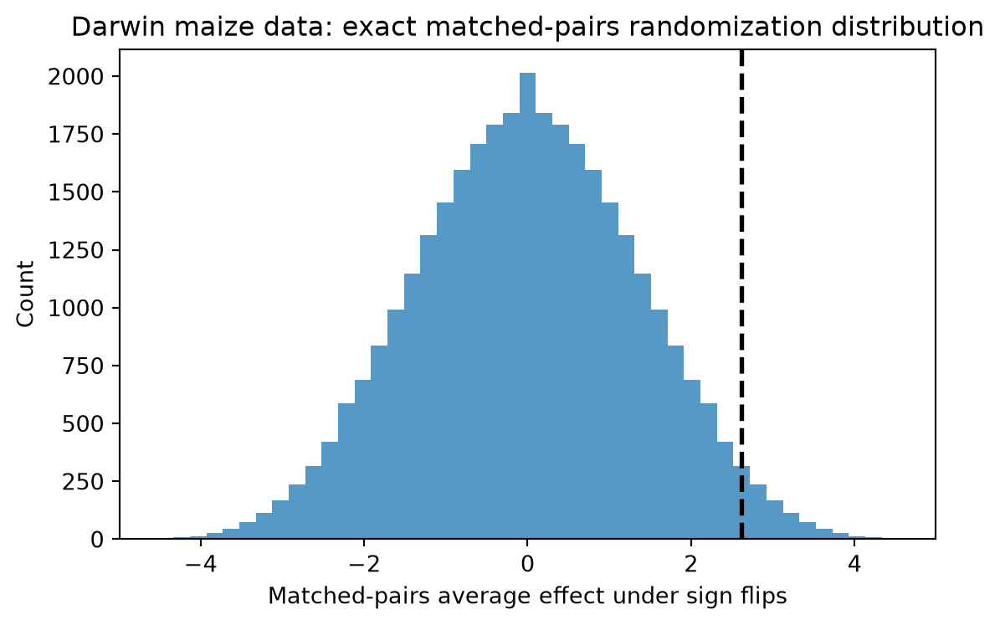
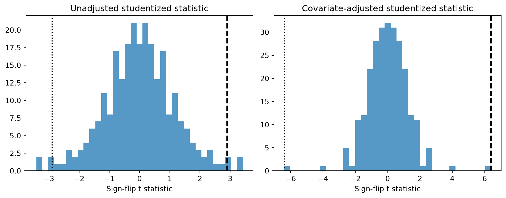

Show code
from pathlib import Path
import matplotlib.pyplot as plt
import numpy as np
import pandas as pd
np.set_printoptions(precision=4, suppress=True)
data_dir = Path("../data/ding")Matched-pairs experiments
Matched-pairs experiments replace unrestricted treatment permutations with sign flips inside pairs. The Darwin maize data in the source folder make that logic transparent.
zea = pd.read_csv(data_dir / "ZeaMays.csv")
diff = zea["diff"].to_numpy(dtype=float)
n_pairs = diff.size
tau_hat = diff.mean()
se_hat = diff.std(ddof=1) / np.sqrt(n_pairs)
sign_patterns = np.array(
np.meshgrid(*([np.array([-1.0, 1.0])] * n_pairs), indexing="ij")
).reshape(n_pairs, -1).T
randomization_dist = sign_patterns @ np.abs(diff) / n_pairs
one_sided_pvalue = np.mean(randomization_dist >= tau_hat)
two_sided_pvalue = np.mean(np.abs(randomization_dist) >= abs(tau_hat))
pd.DataFrame(
{
"estimate": [tau_hat],
"se": [se_hat],
"one_sided_randomization_pvalue": [one_sided_pvalue],
"two_sided_randomization_pvalue": [two_sided_pvalue],
}
)| estimate | se | one_sided_randomization_pvalue | two_sided_randomization_pvalue | |
|---|---|---|---|---|
| 0 | 2.616667 | 1.218195 | 0.026337 | 0.052673 |
fig, ax = plt.subplots(figsize=(6, 4))
ax.hist(randomization_dist, bins=45, alpha=0.75)
ax.axvline(tau_hat, color="black", linestyle="--", linewidth=2.0)
ax.set_xlabel("Matched-pairs average effect under sign flips")
ax.set_ylabel("Count")
ax.set_title("Darwin maize data: exact matched-pairs randomization distribution")
fig.tight_layout()
The second worked example in the R script is the Imbens-Rubin television data. Each row is a matched pair. The outcome contrast is diffy, and diffx is a pre-treatment pair difference. The unadjusted paired estimator is the intercept-only regression of diffy; the adjusted estimator is the intercept in a pair-level regression of diffy on diffx.
tv = np.array(
[
[12.9, 12.0, 54.6, 60.6],
[15.1, 12.3, 56.5, 55.5],
[16.8, 17.2, 75.2, 84.8],
[15.8, 18.9, 75.6, 101.9],
[13.9, 15.3, 55.3, 70.6],
[14.5, 16.6, 59.3, 78.4],
[17.0, 16.0, 87.0, 84.2],
[15.8, 20.1, 73.7, 108.6],
]
)
diffx = tv[:, 1] - tv[:, 0]
diffy = tv[:, 3] - tv[:, 2]
def intercept_tstat(y, x=None):
if x is None:
design = np.ones((len(y), 1))
else:
design = np.column_stack([np.ones(len(y)), x])
beta, *_ = np.linalg.lstsq(design, y, rcond=None)
resid = y - design @ beta
sigma2 = float(resid @ resid) / (len(y) - design.shape[1])
cov = sigma2 * np.linalg.inv(design.T @ design)
return float(beta[0]), float(np.sqrt(cov[0, 0])), float(beta[0] / np.sqrt(cov[0, 0]))
unadj_est, unadj_se, unadj_t = intercept_tstat(diffy)
adj_est, adj_se, adj_t = intercept_tstat(diffy, diffx)
tv_signs = np.array(np.meshgrid(*([np.array([-1.0, 1.0])] * len(diffy)), indexing="ij")).reshape(len(diffy), -1).T
tv_tstats = np.zeros((tv_signs.shape[0], 2))
for i, signs in enumerate(tv_signs):
tv_tstats[i, 0] = intercept_tstat(diffy * signs)[2]
tv_tstats[i, 1] = intercept_tstat(diffy * signs, diffx * signs)[2]
pd.DataFrame(
{
"estimate": [unadj_est, adj_est],
"se": [unadj_se, adj_se],
"t": [unadj_t, adj_t],
"studentized_FRT_pvalue": [
np.mean(np.abs(tv_tstats[:, 0]) >= abs(unadj_t)),
np.mean(np.abs(tv_tstats[:, 1]) >= abs(adj_t)),
],
},
index=["Unadjusted pair mean", "Adjusted for pair-level covariate"],
)| estimate | se | t | studentized_FRT_pvalue | |
|---|---|---|---|---|
| Unadjusted pair mean | 13.425000 | 4.636337 | 2.895605 | 0.031250 |
| Adjusted for pair-level covariate | 8.994303 | 1.409610 | 6.380702 | 0.007812 |
fig, axes = plt.subplots(1, 2, figsize=(10, 4))
for ax, column, observed, title in [
(axes[0], 0, unadj_t, "Unadjusted studentized statistic"),
(axes[1], 1, adj_t, "Covariate-adjusted studentized statistic"),
]:
ax.hist(tv_tstats[:, column], bins=35, alpha=0.75)
ax.axvline(observed, color="black", linestyle="--", linewidth=2.0)
ax.axvline(-observed, color="black", linestyle=":", linewidth=1.5)
ax.set_title(title)
ax.set_xlabel("Sign-flip t statistic")
fig.tight_layout()
Once the pairs are fixed, the experiment is no longer a general permutation problem. The admissible treatment reallocations are just the within-pair sign changes. The mean pair difference is the natural unadjusted estimator, and pair-level regression adjustment is still tested against the same sign-flip assignment mechanism.